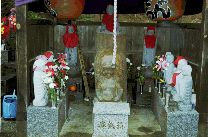

赤城寺/群馬県新里村
群馬の山里にやけに強気の看板がある。良く見れば不動妙王が炎をバックにポーズをとっている。
看板に導かれて赤い提灯の並ぶ参道を登っていく。そして辿り着いたそこにはいきなりチンポに手足がついた
男根星人の隣は駐車場。そしてその駐車場に面して無料休憩所と書かれた小屋がある。しかしその中は動物の剥製とガラクタに占拠されており「ご自由に御利用ください」の文字とは裏腹に体どころか心すら休憩できないのは言うまでも無い。さらに横を見れば住職専用と書かれたカートを発見。この寺が広大であることを窺わせている。
駐車場の周りにも先程見かけたものと同様の強気一本槍の看板が幾つか確認できる。「自動車祈願」の看板、車と不動様のツーショットというだけでも何だか変な図柄なのにその車種といったら。
と、まあこのように駐車場近辺だけで充分満足させていただける寺である。
で、いつまでも駐車場にいてもしょうがないんで山門を潜り本堂のあるエリアへ。ここはお砂踏みのお堂と池、事務所、本堂などがある。駐車場の割にはやけにこじんまりした佇まいである。まずは山門入ってすぐのお砂踏み堂に入ってみる。
このお堂は片側に観音様が並んでおり、そこを通り抜けるスタイルなのだが、お堂に入ると建物の隅のほうで「カチッ」とセンサーの反応する音がしたのを聞き逃さなかった。一体何が始まるのだろう、と期待しているとお堂中央の観音様の後ろの方からシャボン玉が降ってきた。見れば自動シャボン玉作り機が観音様の後ろで低い唸りをあげて働いている。これはやられた。いままで見た事のないパターンだ。お堂の造りがもう少しちゃんとしていればそれなりのファンタジー効果はあったかもね。
お堂を出てしょーもない池を眺めつつ本堂へ。この日、何故か寺には誰もおらず、本堂の中にも入れなかったんだけど、外から見ても本尊の不動様がでかいのは良く分かった。
本堂から上を見ると上の方にも何やらお堂やお地蔵さんらしきものが見えるので取りあえず行ってみる。
まず最初に目に付いたのが「まゆ玉大黒天」。悪いおクスリをきめちゃったような表情が不気味。しかしどこがまゆで何が玉なのかは一切不明。

次に現れるのは「もっちゃん地蔵」これまたもっちゃんなる人物が一体何者なのか、由来は一切不明。たくさんの地蔵に囲まれたその地蔵、丸太に半身彫りの像はいかにも素人が彫った様だが、真面目に彫っているだけに無気味さ倍増。笑いを取りにきたのか真面目なのか良く分からないところがつらい。
で、そこを抜けると不動さんが並ぶ道。途中、秘宝館なる小屋があったが鍵がかかっていて中の様子は窺い知ることはできなかった。

そして最後にコロムビア.トップに似た「世直しトップ地蔵尊」が現れる。この寺、無人なのは仕方ないとしても（朝だったし、雨だったし）こーゆー訳の分からない物件を多数取り揃えている寺なんだからせめて何らかの説明書きが欲しい。なんでこんなトコにトップがいるのか、もっちゃんって誰よ。何の説明もされないままモヤモヤとした気分で駐車場に戻る。
駐車場あたりの雰囲気は満点なんだけどなあ〜。サッカーじゃないけど決定力不足って感じですかね。
ま、トップ地蔵が100メートル位あったりして、その内部が胎内秘宝曼陀羅地獄極楽めぐり（勿論18歳以下入場禁止）かなんかだったりすると百点満点なんだけどねえ。そんでもって、さらに地下洞窟に千躰観音かなんかあってさらにその先に洞窟風呂とマッサージと土産屋と.......ってキリがないからやめておこう。
しかし帰りしなに駐車場の片隅にある人物の奉納札を発見して何故か御満悦なオレ。某業界の大御所であるその人物とは...........

1999.4
珍寺大道場 HOME